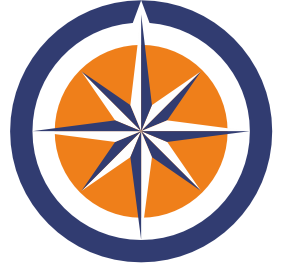

PhD student @
Computer Science and Engineering
University of California, San Diego
Email: svrao AT ucsd DOT edu
Address: EBU3B 3142, 9500 Gilman Dr. #0404
La Jolla, CA 92093-0404
I am a CS PhD student at UC San Diego advised by Stefan Savage and Geoff Voelker. My research focuses on improving security and privacy through empirical means, encompassing areas like enterprise security, web security/privacy, and internet measurement. I am a member of the Sysnet and CryptoSec research groups, and the Center for Networked Systems at UCSD. In my spare time, I keep busy with several hobbies. My hometown is Bengaluru, India. If you're looking for my photography gallery page, go here.
 |
Ph.D. in Computer Science. University of California, San Diego.
Sep 2023 - Present.
| |
| |
M.S. in Computer Science. University of California, San Diego.
Sep 2021 - Jun 2023.
Specialization in Computer Systems |
|
|  | Bachelor's degree in Computer Science. PES University, Bengaluru. May 2016 - Jul 2020.
Specialization in Data Science |
Google, San Francisco Software Engineering Intern in Virtual Cluster team at Google Cloud, developing ways to improve the user experience when spawning new Borg clusters (Google's Cluster Manager). Jun 2022 - Sep 2022.
Citrix, Bangalore Software Engineer in the Citrix Licensing team - designing a microservice based (Docker) test automation framework in a hybrid cloud model (Azure Cloud and Citrix's Xen Hypervisors). Aug 2020 - Aug 2021.
GradWIC Mentor. UCSD Graduate Women in Computing . 2023.
VP External. Jacobs Student Graduate Council. 2021 - 2023.
Seargent at arms. Citrix Orators Toastmasters Club.
2020 - 2021.
All my contributions are open sourced and most of them are available below.
My two favorite hobbies are hiking and running! Some of my favourite himalayan hikes/treks have been - Hampta Pass, Bharmatal , Valley Of Flowers. I've ventured on some beautiful hikes in San Diego - Strawberry Junction on Mt San Jacinto , Anza Borrego Desert Hike, Fortuna Mtn Trail, Black Mountain Trail on Mt San Jacinto (this one has some funny pics), Cowles Mountain, Torrey Pines - to name a few. I'm also into badminton, tennis and basketball! I occasionally capture photos here and there - checkout some of my clicks or follow @say__cheeesee on instagram!